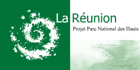

La nature de France et la variété de ses paysages en font une destination de choix pour les touristes du monde entier. Les Français sont conscients de la nécessité de préserver l’identité des régions et la diversité naturelle de ses sites. Les habitants se regroupent donc pour essayer de maintenir l’équilibre naturel de leur région par la création de réserves naturelles.
Quand le site est remarquable ou que la préservation d’une espèce en dépend, les pouvoirs publics apportent leur concours en empêchant, par la loi, la dégradation des milieux naturels. C’est ainsi, par exemple, qu’est né en 1963 le national de la Vanoise, premier parc national de France pour protéger le bouquetin menacé d’extinction dans cette partie des Alpes.
{% Image page, "gecko_vert_des_hauts.jpg", "Un gecko vert des Hauts sur une poutre en bois gris" %}
Gecko Vert des Hauts - Phelsuma borbonica, Photo prise au belvédère de l’Éden sur les hauteurs de la Rivière du Mât par Tikouet
La nature Réunionnaise est remarquable à plus d’un titre. Le grand spectacle de ses reliefs, ses ravines encaissées, de ses caldeiras élancées, de sa végétation et de sa faune émerveille les visiteurs. Les spécialistes eux, sont intéressés par la rareté des espèces rencontrées. Et pour cause, la Réunion, île reculée abrite plusieurs centaines d’espèces animales et végétales uniques au monde. Depuis l’arrivée de l’homme sur cette île, de nombreuses espèces endémiques ont disparu et nombre d’entre elles sont encore menacées aujourd’hui.
L’idée de protéger la faune et la flore de la Réunion n’est pas nouvelle. La réserve naturelle de Mare Longue est crée en 1981 pour protéger la dernière forêt primaire de l’archipel des Mascareignes. En 1991, une autre réserve naturelle, celle de la Roche Écrite est créée pour protéger le tuit-tuit (ou échenilleur) vivant dans les hauts de Saint-Denis.
{% Image page, "takamaka-reunion.jpg", "vallée verdoyante de Takamata" %}
Vallée de Takamaka - photo de Ksisk
 L’idée de créer un parc naturel à la Réunion date de 1992 et la Région décidera de porter le projet en 1995 avec la publication de la Charte réunionnaise de l’environnement et le Schéma d’aménagement régional qui projette la création du parc sur une grande partie des régions montagneuses de la région. Ces régions difficilement cultivables sont appelées ici les hauts.
Après deux ans d’études (1998-2000), trois ans de consultations (2001-2004) puis deux ans (2004-2006) de préparation du projet avec les collectivités et l’État, le Parc national de La Réunion, neuvième parc national français voit le jour le 5 mars 2007, en pleine période de cyclones. À l’heure ou je vous le présente, le parc existe mais il a encore besoin d’une bonne équipe pour le faire vivre. Son site web ne présente que le projet et recrute 8 personnes. Maintenant que le parc est référencé ici, j’espère que le nouvel établissement public dénichera un webmaster talentueux pour faire vivre le parc sur la toile.
.jpg&action=view){kind=link}
{kind=link}